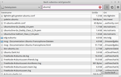
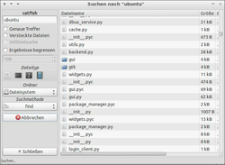

Catfish
Ausbaufähige Anleitung
Dieser Anleitung fehlen noch einige Informationen. Wenn Du etwas verbessern kannst, dann editiere den Beitrag, um die Qualität des Wikis noch weiter zu verbessern.
Anmerkung: Der Artikel bezieht sich auf Version 0.3, die in den Quellen der aktuellen Ubuntu-Versionen nicht mehr vorliegt!
Dieser Artikel wurde für die folgenden Ubuntu-Versionen getestet:
Ubuntu 16.04 Xenial Xerus
Ubuntu 14.04 Trusty Tahr
Zum Verständnis dieses Artikels sind folgende Seiten hilfreich:
Ein Terminal öffnen, optional
Einen Editor öffnen, optional
Catfish  ist ein grafisches Frontend für verschiedene Suchdienste. Das Programm gestattet es, schnell und unkompliziert auf der Festplatte nach Dateien und Ordnern zu suchen. Das Programm ist intuitiv zu bedienen. Nützlich ist die Eingrenzung der Suchergebnisse nach Dateitypen, z.B. nach Bilddateien.
ist ein grafisches Frontend für verschiedene Suchdienste. Das Programm gestattet es, schnell und unkompliziert auf der Festplatte nach Dateien und Ordnern zu suchen. Das Programm ist intuitiv zu bedienen. Nützlich ist die Eingrenzung der Suchergebnisse nach Dateitypen, z.B. nach Bilddateien.
Die von Catfish unterstützten Suchdienste sind:
|  |
| Catfish 1.0 |
find (bei allen Ubuntu-Varianten vorinstalliert)
(s)locate
Zeitgeist (erst ab Ubuntu 13.04; Zeitgeist wird bisher nur von Ubuntu genutzt)
Hinweis:
Dieser Artikel behandelt die Version 0.3, die bis einschließlich Ubuntu 12.04 in den offiziellen Paketquellen enthalten ist. Ab Ubuntu 12.10 befindet sich neuere Versionen in den offiziellen Paketquellen, die auf GTK3 basieren und sich im Verhalten deutlich unterscheiden.
Installation¶
Catfish ist standardmäßig in der Installation von Xubuntu enthalten. Ansonsten installiert [1] man das folgende Paket:
catfish (universe)
 mit apturl
mit apturl
Paketliste zum Kopieren:
sudo apt-get install catfish
sudo aptitude install catfish
Optional kann ein weiterer Suchdaemon installiert werden (siehe oben).
Benutzung¶
|  |
| Catfish 0.3 |
Die Benutzung des Programms ist intuitiv zu erfassen. Den Suchbegriff eingeben und nach Anwahl des Buttons "Suchen" werden die Ergebnisse im Fenster angezeigt. Um diese alphabetisch oder nach dem letzten Änderungsdatum sortiert anzuzeigen, auf den entsprechenden Feldnamen z.B. "Size" zu klicken. Die Dateien werden nun in auf- oder absteigender Reihenfolge angezeigt. Ein weiterer Klick kehrt die Reihenfolge um.
Startmodi¶
Catfish kann in verschiedenen Modi gestartet werden: entweder im Terminal [2] mittels catfish und der gewünschten Option starten oder mit Hilfe des Menüeditors den Eintrag verändern. Nützlich erweisen sich die Optionen unter anderem in den Dateimanagern Thunar und PCManFM (siehe unten).
| Optionen | |
| Modus | Beschreibung |
--exact | nur exakt übereinstimmende Ergebnisse anzeigen |
--file-action=Aktion | Aktion beim Öffnen von Dateien (open oder folder) |
--fileman=DATEIMANAGER | verwendeter Dateimanager, z.B. Thunar |
--fulltext | Volltextsuche |
--hidden | versteckte Dateien einbeziehen |
--iso-time | Zeit und Datum gemäß ISO formatieren |
--large-icons | große Symbole verwenden |
--limit=X | Suchergebnisse auf Anzahl X einschränken |
--method=Methode | Suchmethode festlegen, z.B. --method=find |
--path=/home | Suchpfad |
--thumbnails | Bildvorschau benutzen |
--wrapper=Wrapper-Skript | Wrapper-Skript zum Öffnen von Dateien verwenden |
Hinweis:
Die oben genannte Option der ISO-Datum/Zeitanzeige ist beim Sortieren von Suchergebnissen sehr empfehlenswert. Sonst wird bei der nach Datum sortierten Liste der Suchresultate beim Klick auf den Spaltenkopf "Geändert am" nach dem Tagesdatum sortiert (z.B. 1.2.2012, danach 2.4.1999 und dann 3.1.2008).
Einbinden in Dateimanager¶
Thunar¶
Hinweis:
Ab Ubuntu 15.04 ist die Suche mit Catfish bereits in den Dateimanager Thunar integriert. Die nachfolgend beschriebenen Lösungen sind damit prinzipiell überflüssig, auch wenn sie weiterhin funktionieren.
Hier gibt es prinzipiell zwei Möglichkeiten: entweder eine benutzerdefinierte Aktion (siehe nächster Abschnitt) oder eine Skript-Lösung.
Benutzerdefinierte Aktion¶
Um die Suche mit Catfish in Thunar zu integrieren, muss eine benutzerdefinierte Aktion (siehe dort) angelegt werden. Nachdem dies geschehen ist, kann eine Suche über den Eintrag im Kontextmenü bequem per Rechtsklick aufgerufen werden.
Alternativ kann ein Skript von Jason Valdron genutzt werden. Dazu das Skript integrate-catfish.sh  herunterladen, in den Download-Ordner wechseln und folgende Befehle in einem Terminal [2] ausführen:
herunterladen, in den Download-Ordner wechseln und folgende Befehle in einem Terminal [2] ausführen:
chmod +x integrate-catfish.sh # ausführbar machen ./integrate-catfish.sh # Skriptaufruf
Die Suchfunktion kann nach einem Neustart des Dateimanagers per Rechtsklick ( ) genutzt werden.
) genutzt werden.
PCManFM¶
Ab Version 1.1.2 bzw. Ubuntu 13.10 enthält PCManFM (wieder) eine integrierte Suchfunktion. Für ältere Ubuntu-Versionen dient die nachfolgend beschriebene Methode.
Zunächst erstellt man mit Root-Rechten eine Datei /usr/local/bin/folder-search.sh mit folgendem Inhalt [3]:
#!/bin/sh catfish --fileman=pcmanfm --path=$*
und macht sie ausführbar:
chmod +x /usr/local/bin/folder-search.sh
Bei Bedarf können weitere Optionen (siehe oben) angegeben werden.
Im zweiten Schritt erzeugt man einen Programmstarter, z.B. mit dem Dateinamen ~/.local/share/applications/catfish-folder-handler.desktop:
[Desktop Entry] Type=Application Name=Nach Dateien suchen Exec=/usr/local/bin/folder-search.sh %f Icon=catfish NoDisplay=true Encoding=UTF-8
Im dritten und letzten Schritt ergänzt man die Datei ~/.local/share/applications/mimeapps.list unter der Zeile [Added Associations] um den Eintrag:
inode/directory=catfish-folder-handler.desktop;
Für den Fall, dass die Datei ~/.local/share/applications/mimeapps.list nicht existiert, erstellt man sie mit folgendem Inhalt (siehe auch MIME-Typ):
[Added Associations] inode/directory=catfish-folder-handler.desktop;
Anschließend kann man das Kontextmenü () in PCManFM verwenden, um eine Dateisuche für den ausgewählten Ordner zu starten.
Links¶
Dateisuche mit Catfish
 - heise Open Source, 11/2012
- heise Open Source, 11/2012Fischfutter - Suchmaschinenübergreifendes Frontend Catfish
- LinuxUser, 12/2010
- Erstellt mit Inyoka
-
 2004 – 2017 ubuntuusers.de • Einige Rechte vorbehalten
2004 – 2017 ubuntuusers.de • Einige Rechte vorbehalten
Lizenz • Kontakt • Datenschutz • Impressum • Serverstatus -
Serverhousing gespendet von